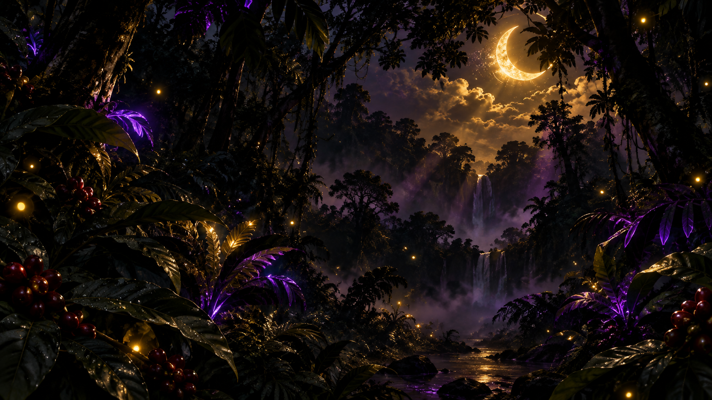
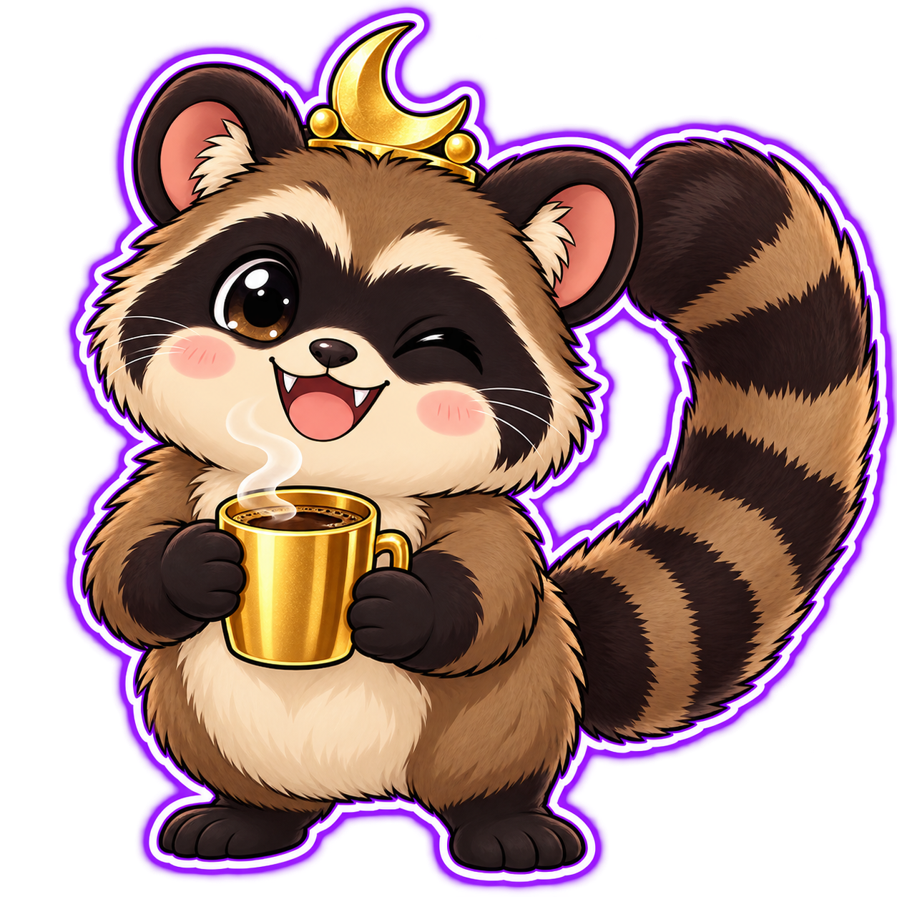
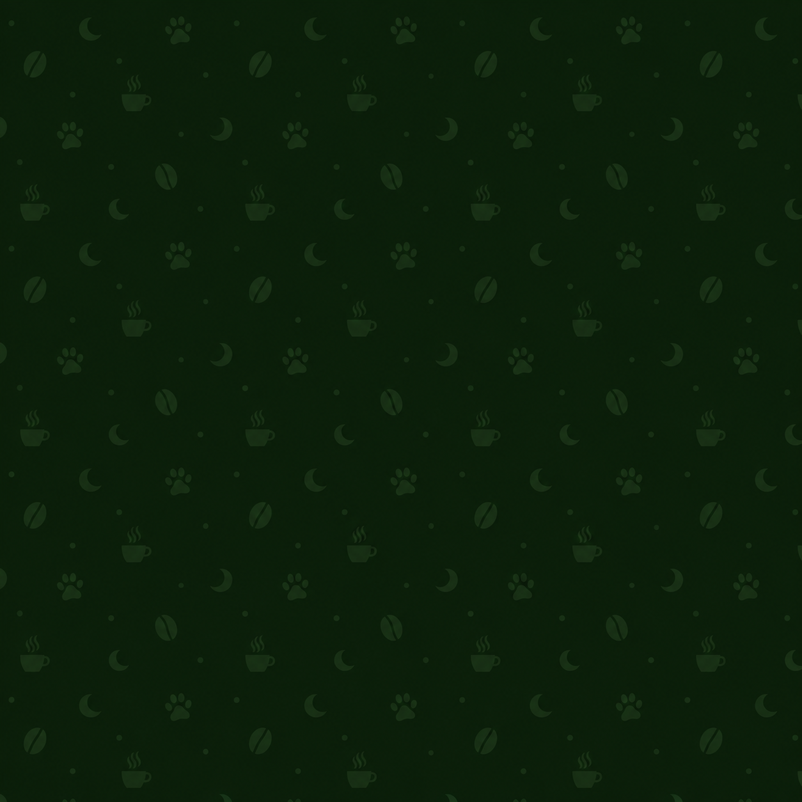
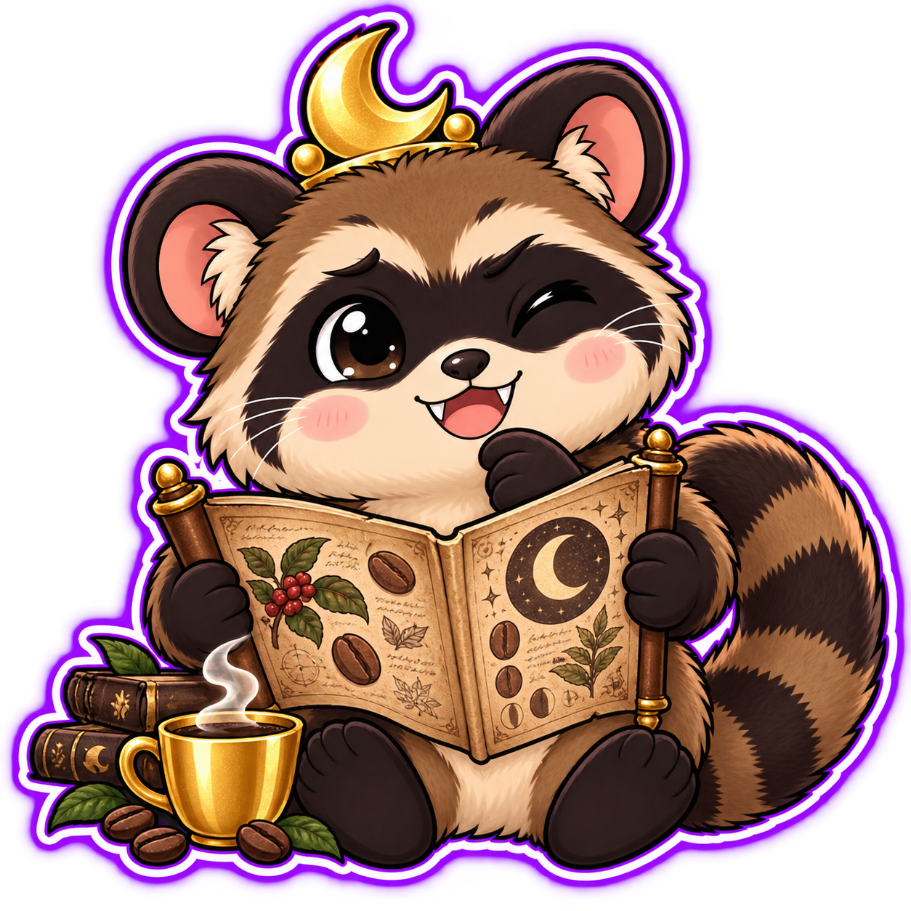
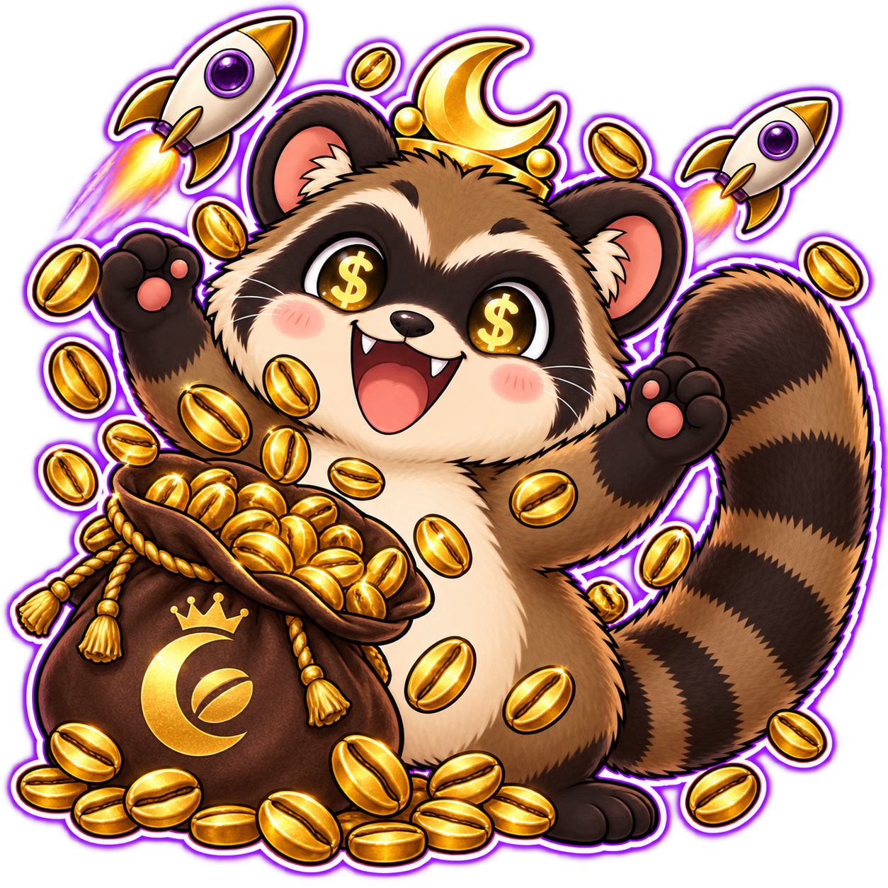
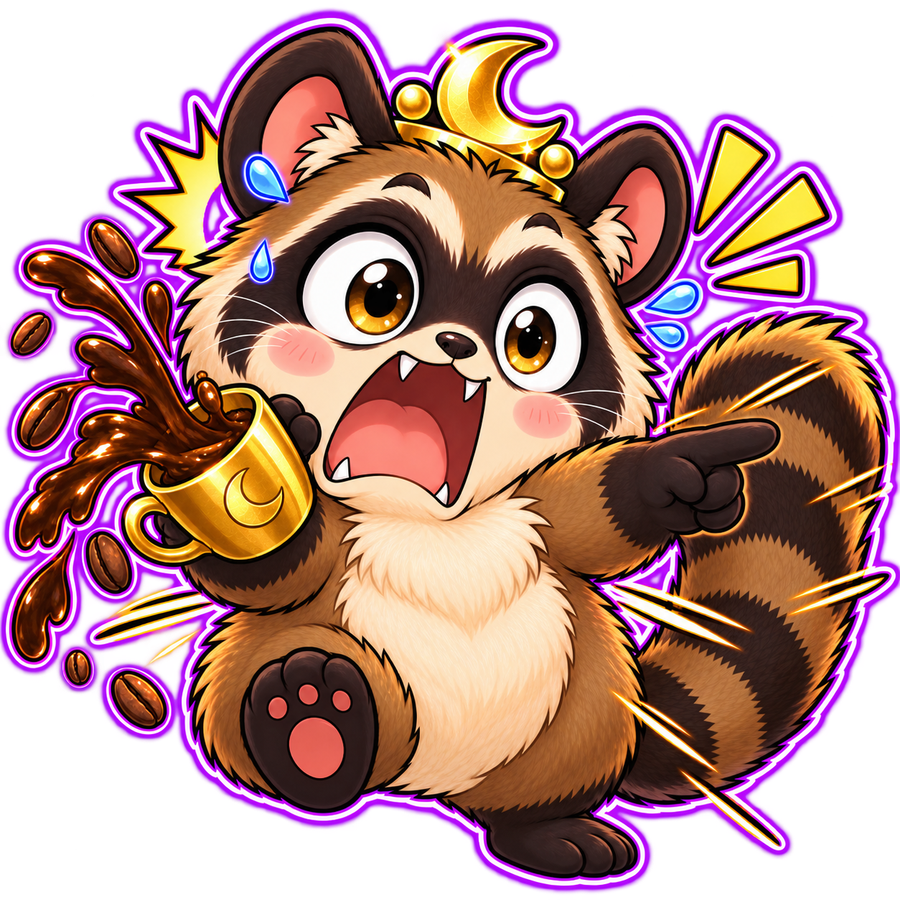
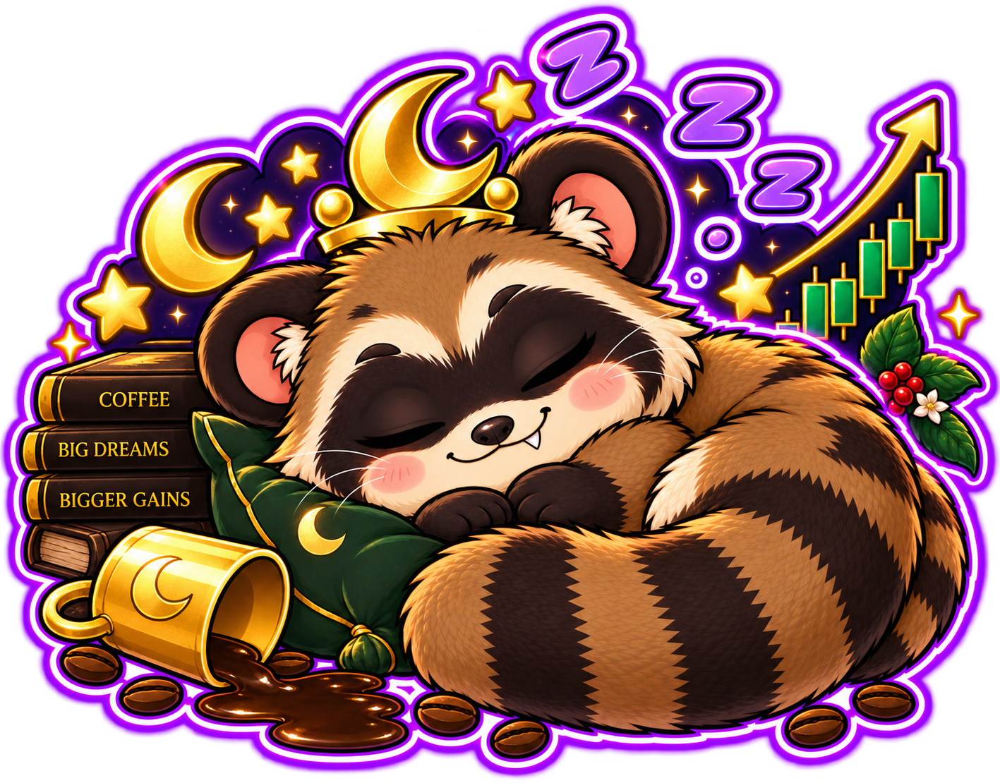
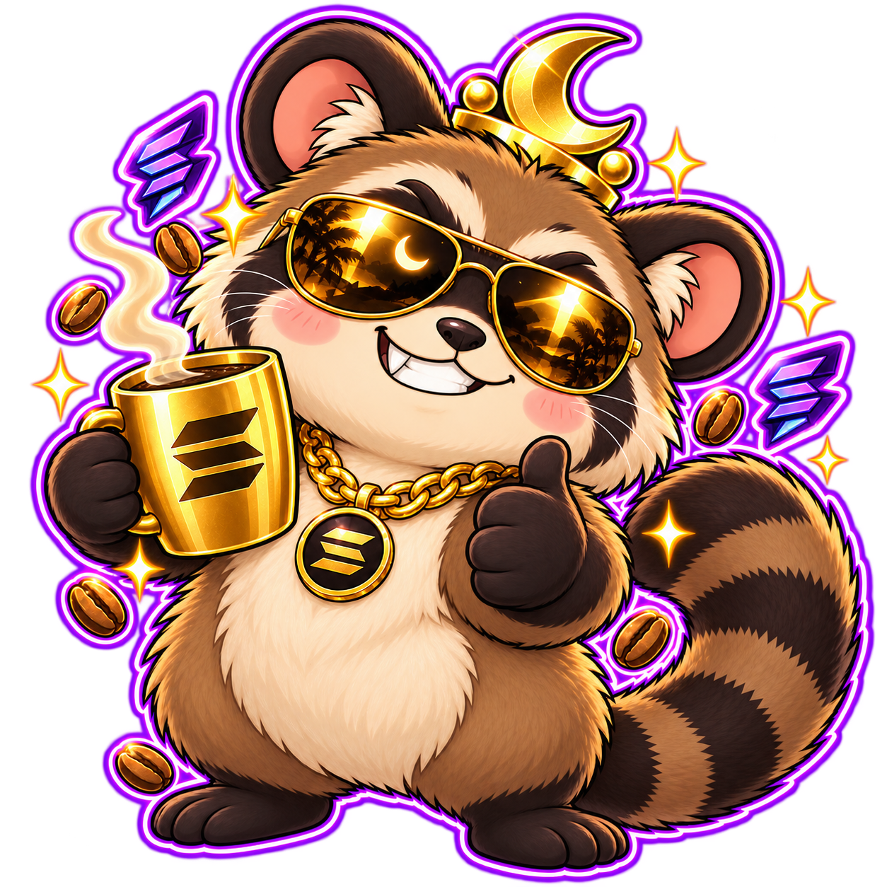

Same Caffeine. Different Life.
$TODDY — The Kopi Luwak Meme Coin
on Solana.



Deep in the jungles of Southeast Asia lives the most legendary coffee connoisseur in the animal kingdom — Toddy the Asian Palm Civet.
By day he sleeps. By night he trades. Fueled by the rarest coffee on earth — Kopi Luwak — Toddy navigates the crypto markets with the precision of a seasoned night trader.
Coffee Big Dreams. Bigger Gains.


Download Phantom Wallet from phantom.app — free, takes 2 minutes. Available on iOS, Android and Chrome browser.
Buy SOL from any exchange like Binance, Coinbase or Kraken. Send it to your Phantom wallet address.
Visit jup.ag or raydium.io and connect your Phantom wallet by clicking "Connect Wallet".
Paste the verified $TODDY CA, enter your SOL amount and click Swap. If the transaction fails, set slippage to 1–3% and retry. You now hold $TODDY ☕🌙
⏱️ All milestones are measured from TGE (Token Generation Event — the day $TODDY launches on Solana). Timelines are targets, not guarantees. Community drives the pace. ☕

Fueled by Coffee and Conviction. The $TODDY community trades while the world sleeps.

Everything you need to know about $TODDY — straight from the jungle. No fluff. Just facts.
$TODDY is a meme coin on the Solana blockchain, themed around Toddy the Asian Palm Civet — the animal behind Kopi Luwak, the world's rarest coffee. It is a fair-launch, community-owned token with no team allocation and no pre-sale.
Kopi Luwak is the world's most expensive and rarest coffee. It is made from coffee beans eaten and naturally processed by the Asian Palm Civet — the same animal as our mascot Toddy. A cup can cost up to $100 USD. We took the rarest coffee and turned it into the rarest meme.
$TODDY launches as a fair-launch token on Solana. LP is auto-locked at launch and Mint Authority is revoked — meaning no new tokens can ever be created and no one can drain liquidity. Always verify the CA from this official website only before buying.
Yes. 90% of liquidity is auto-locked at TGE. When $TODDY launches on Solana, the LP is locked/burned automatically via the launchpad. The lock proof transaction will be published here after TGE so anyone can verify on-chain.
On Solana, Mint Authority controls the ability to create new tokens. When revoked, the total supply is permanently fixed at 1,000,000,000 $TODDY and no one — including the creators — can ever mint additional tokens. This is the Solana equivalent of a renounced contract on Ethereum.
After TGE, $TODDY will be available on Solana DEXs — Jupiter (jup.ag) and Raydium (raydium.io). Simply connect your Phantom wallet, paste the official CA and swap SOL for $TODDY. Follow our How To Buy guide above.
You need a Solana-compatible wallet. We recommend Phantom Wallet (phantom.app) — free and available on iOS, Android and Chrome. Solflare and Backpack wallets also work.
If your swap fails on Jupiter or Raydium, increase slippage tolerance to 1–3% in settings and try again. High demand during launch can cause failed transactions. Your SOL is never lost on a failed swap — it always returns to your wallet.
Solana is the #1 chain for meme coins in 2025–2026. It processes 65,000+ transactions per second with fees as low as $0.001. Fast, cheap, and the home of the biggest meme coin community on earth.
After buying, $TODDY should appear automatically in Phantom. If not, click "Manage Token List", search for $TODDY or paste the contract address to add it manually. Your tokens are always safe on the Solana blockchain.
No. $TODDY is a 100% fair launch. There is no pre-sale, no whitelist, no private sale and no VC allocation. Every single person gets the same opportunity at launch. This is what true fair launch means.
Rule 1: The ONLY official CA is on toddy.meme and our verified socials. Never buy from a CA shared in DMs or random groups. Rule 2: Always verify on Solscan before buying. Rule 3: We will NEVER DM you first asking you to buy.
Total supply is fixed at 1,000,000,000 $TODDY forever. 1 Billion is a clean, digestible number that works well for meme coin pricing and community distribution. With Mint Authority revoked, this supply can never increase.
Our roadmap targets CoinGecko and CoinMarketCap in Phase 2 (TGE + 30 days) and CEX listings in Phase 3 (TGE + 90 days). Exchange listings depend on community size and trading volume. The bigger our community, the faster we list.
Join our Telegram and Twitter, share memes, tell your friends and HODL. Meme coins grow through community energy. Every share, every post, every meme brings more night traders into the jungle. The coffee is brewing. Are you in? ☕🌙
$TODDY is the only meme coin built around Kopi Luwak — the world's rarest coffee — and the Asian Palm Civet that produces it. While most meme coins copy dog or frog themes, $TODDY has a unique real-world story, a Southeast Asian cultural identity, and a genuine "night trader" narrative that resonates with the crypto community. Rare coffee. Rare meme. ☕🌙